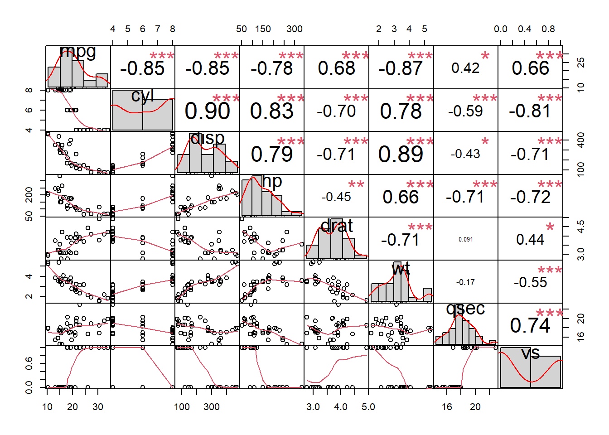
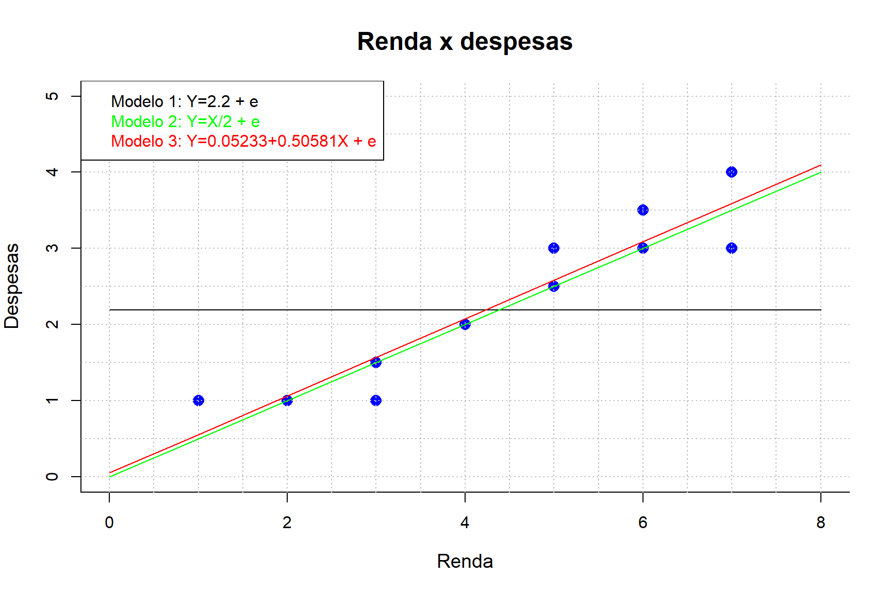
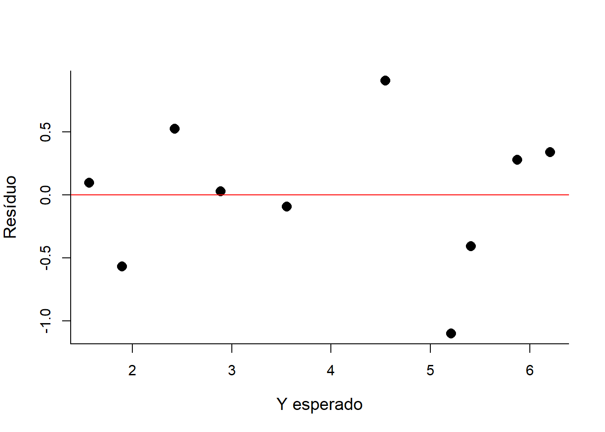

Módulo 3
Correlação (27/10/20)
Exemplos de possíveis correlações
# Diagrama de dispersão
# Plotando todos no mesmo gráfico
par(mfrow=c(2,3))
# Correlação perfeita positiva
x<-seq(-100, 100)
y1<-x*2.53
plot(x, y1, main = "Correlação perfeita positiva",ylab = "y",col="blue")
# Correlação perfeita negativa
x<-seq(-100, 100)
y2<- -x*2.53
plot(x, y2, main = "Correlação perfeita negativa",ylab = "y",col="blue")
# Alta correlação positiva
y3<-rnorm(y1,y1,20)
plot(x,y3,main="Alta correlação positiva",ylab = "y",col="blue")
# Alta correlação
y4<-rnorm(y1,(-1)*y1,20)
plot(x,y4,main="Alta correlação negativa",ylab = "y",col="blue")
# Baixa correlação positiva
y5<-rnorm(y1,y1,500)
plot(x,y5,main="Baixa correlação",ylab = "y",col="blue")
# Correlação não linear
y6<- rnorm(x, x^2, 1000)
plot(x,y6,main="Correlação não linear",ylab = "y",col="blue")Exercício 1
distancia<-scan(text="20.00 60.00 15.00 45.00 35.00 80.00 70.00 73.00 28.00 85.00")
consumo<-scan(text=" 1.33 5.45 1.66 3.46 2.92 6.15 4.11 5.00 2.95 6.54")
#Cálculo da correlação linear simples
xbarra<-mean(distancia)
ybarra<-mean(consumo)
sumxy<-sum(distancia*consumo)
sumx2<-sum(distancia^2)
sumy2<-sum(consumo^2)
n<-length(consumo)
r<-(sumxy-n*xbarra*ybarra) / (sqrt((sumx2-n*(xbarra^2))*(sumy2-n*(ybarra^2))))
r[1] 0.9475761r^2[1] 0.8979004# Crianção da função para a correlação e coeficiente de determinação
correlacao<-function(x,y){
sumxy<-sum(x*y)
xbarra<-mean(x)
ybarra<-mean(y)
sumx2<-sum(x^2)
sumy2<-sum(y^2)
n<-length(x)
r<-(sumxy-n*xbarra*ybarra) / (sqrt((sumx2-n*(xbarra^2))*(sumy2-n*(ybarra^2))))
r2<-r^2
return(list(coef.correlacao=r,coef.determinacao=r2))
}
correlacao(distancia,consumo)$coef.correlacao
[1] 0.9475761
$coef.determinacao
[1] 0.8979004# Função disponível no R
cor(consumo,distancia)[1] 0.9475761# Diagrama de dispersão x= Distância y= Consumo
plot(distancia, consumo, main="Consumo x Distância", ylab= "Consumo (l)", xlab="Distância (km)",
pch=16, col="blue",cex.main=1.5, cex=1.5,cex.lab=1.2, cex.axis=1,bty="l")
abline(h=seq(0,7,1), v=seq(0,90, 10), lty=3, col="gray")
text(30,5, "r=-0.95 ",col = "red",cex = 1.2)
text(30,4.5, "r2=0.90",col = "red",cex = 1.2)# Criação da função do teste
test.c<-function(r,n){
t<-r*sqrt((n-2)/(1-r^2))
return(t)
}# Usando a função com o valor de r arredondado
r<-0.95
n<-10
test.c(r,n)[1] 8.605305alpha<-0.05
inf<-qt(alpha/2, df = n-2)
sup<-qt(1-(alpha/2), df = n-2)# Fazendo o teste de hipóteses (t.calc > -t.crit | t.calc < +t.crit)
test.c(r,n) < inf | test.c(r,n) > sup[1] TRUE# Fazendo o teste (|t.calc|>|t.crit|)
abs(test.c(r,n)) > sup[1] TRUE# Rejeitamos H0. Há correlação, com 95% de confiança.# Usando a função disponível no R
cor.test(distancia,consumo)
Pearson's product-moment correlation
data: distancia and consumo
t = 8.3878, df = 8, p-value = 3.101e-05
alternative hypothesis: true correlation is not equal to 0
95 percent confidence interval:
0.7882117 0.9878390
sample estimates:
cor
0.9475761 # Acréscimo na função anterior - opção 1
correlacao<-function(x,y){
sumxy<-sum(x*y)
xbarra<-mean(x)
ybarra<-mean(y)
sumx2<-sum(x^2)
sumy2<-sum(y^2)
n<-length(x)
r<-(sumxy-n*xbarra*ybarra) / (sqrt((sumx2-n*(xbarra^2))*(sumy2-n*(ybarra^2))))
r2<-r^2
t<-r*sqrt((n-2)/(1-r^2))
return(list(coef.correlacao=r,coef.determinacao=r2, teste.calc=t))
}
correlacao(distancia,consumo)$coef.correlacao
[1] 0.9475761
$coef.determinacao
[1] 0.8979004
$teste.calc
[1] 8.387781# Usando a função sem arredondamento - opção 2
r<-cor(distancia,consumo)
n<-10
test.c(r,n)[1] 8.387781# Construção do teste graficamente
x <- seq(- 10, 10, by = 0.01)
fx<-dt(x, df=n-2)
plot(x,fx, type="l", col='black',cex.main=1.5, cex=1.5,cex.lab=1.2, cex.axis=1,bty="l")
polygon(x = c(2.306004, seq(2.306004, 10, 0.01), 10),
y = c(0, dt(seq(2.306004, 10, 0.01),df=n-2), 0),
col = 'blue',density=50)
polygon(x = c(-10, seq(-10,-2.306004, 0.01), -2.306004),
y = c(0, dt(seq(-10,-2.306004, 0.01),df=n-2), 0),
col = 'blue',density=50)
abline(v=c(inf,sup), lty=3, col="blue")
text(-4,0.1, "Região de rejeição",col = "blue",cex = 1,srt = 90)
text(4,0.1, "Região de rejeição",col = "blue",cex = 1,srt = 90)
abline(v=test.c(r,n), lty=3, col="red")
text(8,0.1, "t.calc > t.crit",col = "red",cex = 1,srt = 90)
Gráfico para duas variáveis no eixo y
# Construção do gráfico das variáveis com dois diferentes eixos y
# dev.off() # Limpa padrão gráfico
x<-1:10 # Eixo x
par(mar=c(5.1, 4.1, 4.1, 6.1)) # Estipula as margens para plotar o gráfico
## Primeiro eixo: Consumo
plot(x, consumo, pch=16, axes=FALSE, xlab="", ylab="",
type="b",col="black", main="Consumo x Distância")
# Eixo para a variável consumo
axis(2, ylim=c(0,max(consumo)),col="black")
mtext("Consumo",side=2,line=2,col="black")
## Permitir uma nova figura no mesmo gráfico
par(new=TRUE)
## Segundo eixe: Distância
plot(x,distancia, pch=15, xlab="", ylab="",
axes=FALSE, type="b", col="red")
# Eixo para a variável consumo
axis(4, ylim=c(0,max(distancia)),col="red",col.axis="red")
mtext("Distância",side=4,line=2,col="red")
## Eixo x
axis(1,1:10)
mtext("Amostra",side=1,col="black",line=2)
## Adicionando a legenda
legend("topleft",legend=c("Consumo","Distância"),
text.col=c("black","red"),pch=c(16,15),col=c("black","red"))# help(mtcars)
head(mtcars) mpg cyl disp hp drat wt qsec vs am gear carb
Mazda RX4 21.0 6 160 110 3.90 2.620 16.46 0 1 4 4
Mazda RX4 Wag 21.0 6 160 110 3.90 2.875 17.02 0 1 4 4
Datsun 710 22.8 4 108 93 3.85 2.320 18.61 1 1 4 1
Hornet 4 Drive 21.4 6 258 110 3.08 3.215 19.44 1 0 3 1
Hornet Sportabout 18.7 8 360 175 3.15 3.440 17.02 0 0 3 2
Valiant 18.1 6 225 105 2.76 3.460 20.22 1 0 3 1summary(mtcars) mpg cyl disp hp
Min. :10.40 Min. :4.000 Min. : 71.1 Min. : 52.0
1st Qu.:15.43 1st Qu.:4.000 1st Qu.:120.8 1st Qu.: 96.5
Median :19.20 Median :6.000 Median :196.3 Median :123.0
Mean :20.09 Mean :6.188 Mean :230.7 Mean :146.7
3rd Qu.:22.80 3rd Qu.:8.000 3rd Qu.:326.0 3rd Qu.:180.0
Max. :33.90 Max. :8.000 Max. :472.0 Max. :335.0
drat wt qsec vs
Min. :2.760 Min. :1.513 Min. :14.50 Min. :0.0000
1st Qu.:3.080 1st Qu.:2.581 1st Qu.:16.89 1st Qu.:0.0000
Median :3.695 Median :3.325 Median :17.71 Median :0.0000
Mean :3.597 Mean :3.217 Mean :17.85 Mean :0.4375
3rd Qu.:3.920 3rd Qu.:3.610 3rd Qu.:18.90 3rd Qu.:1.0000
Max. :4.930 Max. :5.424 Max. :22.90 Max. :1.0000
am gear carb
Min. :0.0000 Min. :3.000 Min. :1.000
1st Qu.:0.0000 1st Qu.:3.000 1st Qu.:2.000
Median :0.0000 Median :4.000 Median :2.000
Mean :0.4062 Mean :3.688 Mean :2.812
3rd Qu.:1.0000 3rd Qu.:4.000 3rd Qu.:4.000
Max. :1.0000 Max. :5.000 Max. :8.000 # Variáveis selecionadas
dat<-mtcars[,c(1,2,3,4,5,6,7,8)]# Verifica se há dado faltante
is.na(dat) mpg cyl disp hp drat wt qsec vs
Mazda RX4 FALSE FALSE FALSE FALSE FALSE FALSE FALSE FALSE
Mazda RX4 Wag FALSE FALSE FALSE FALSE FALSE FALSE FALSE FALSE
Datsun 710 FALSE FALSE FALSE FALSE FALSE FALSE FALSE FALSE
Hornet 4 Drive FALSE FALSE FALSE FALSE FALSE FALSE FALSE FALSE
Hornet Sportabout FALSE FALSE FALSE FALSE FALSE FALSE FALSE FALSE
Valiant FALSE FALSE FALSE FALSE FALSE FALSE FALSE FALSE
Duster 360 FALSE FALSE FALSE FALSE FALSE FALSE FALSE FALSE
Merc 240D FALSE FALSE FALSE FALSE FALSE FALSE FALSE FALSE
Merc 230 FALSE FALSE FALSE FALSE FALSE FALSE FALSE FALSE
Merc 280 FALSE FALSE FALSE FALSE FALSE FALSE FALSE FALSE
Merc 280C FALSE FALSE FALSE FALSE FALSE FALSE FALSE FALSE
Merc 450SE FALSE FALSE FALSE FALSE FALSE FALSE FALSE FALSE
Merc 450SL FALSE FALSE FALSE FALSE FALSE FALSE FALSE FALSE
Merc 450SLC FALSE FALSE FALSE FALSE FALSE FALSE FALSE FALSE
Cadillac Fleetwood FALSE FALSE FALSE FALSE FALSE FALSE FALSE FALSE
Lincoln Continental FALSE FALSE FALSE FALSE FALSE FALSE FALSE FALSE
Chrysler Imperial FALSE FALSE FALSE FALSE FALSE FALSE FALSE FALSE
Fiat 128 FALSE FALSE FALSE FALSE FALSE FALSE FALSE FALSE
Honda Civic FALSE FALSE FALSE FALSE FALSE FALSE FALSE FALSE
Toyota Corolla FALSE FALSE FALSE FALSE FALSE FALSE FALSE FALSE
Toyota Corona FALSE FALSE FALSE FALSE FALSE FALSE FALSE FALSE
Dodge Challenger FALSE FALSE FALSE FALSE FALSE FALSE FALSE FALSE
AMC Javelin FALSE FALSE FALSE FALSE FALSE FALSE FALSE FALSE
Camaro Z28 FALSE FALSE FALSE FALSE FALSE FALSE FALSE FALSE
Pontiac Firebird FALSE FALSE FALSE FALSE FALSE FALSE FALSE FALSE
Fiat X1-9 FALSE FALSE FALSE FALSE FALSE FALSE FALSE FALSE
Porsche 914-2 FALSE FALSE FALSE FALSE FALSE FALSE FALSE FALSE
Lotus Europa FALSE FALSE FALSE FALSE FALSE FALSE FALSE FALSE
Ford Pantera L FALSE FALSE FALSE FALSE FALSE FALSE FALSE FALSE
Ferrari Dino FALSE FALSE FALSE FALSE FALSE FALSE FALSE FALSE
Maserati Bora FALSE FALSE FALSE FALSE FALSE FALSE FALSE FALSE
Volvo 142E FALSE FALSE FALSE FALSE FALSE FALSE FALSE FALSE# Verifica a quantidade de dados faltantes
sum(is.na(dat))[1] 0# Matriz de correlação
res <- cor(dat)
res mpg cyl disp hp drat wt
mpg 1.0000000 -0.8521620 -0.8475514 -0.7761684 0.68117191 -0.8676594
cyl -0.8521620 1.0000000 0.9020329 0.8324475 -0.69993811 0.7824958
disp -0.8475514 0.9020329 1.0000000 0.7909486 -0.71021393 0.8879799
hp -0.7761684 0.8324475 0.7909486 1.0000000 -0.44875912 0.6587479
drat 0.6811719 -0.6999381 -0.7102139 -0.4487591 1.00000000 -0.7124406
wt -0.8676594 0.7824958 0.8879799 0.6587479 -0.71244065 1.0000000
qsec 0.4186840 -0.5912421 -0.4336979 -0.7082234 0.09120476 -0.1747159
vs 0.6640389 -0.8108118 -0.7104159 -0.7230967 0.44027846 -0.5549157
qsec vs
mpg 0.41868403 0.6640389
cyl -0.59124207 -0.8108118
disp -0.43369788 -0.7104159
hp -0.70822339 -0.7230967
drat 0.09120476 0.4402785
wt -0.17471588 -0.5549157
qsec 1.00000000 0.7445354
vs 0.74453544 1.0000000round(res, 2) mpg cyl disp hp drat wt qsec vs
mpg 1.00 -0.85 -0.85 -0.78 0.68 -0.87 0.42 0.66
cyl -0.85 1.00 0.90 0.83 -0.70 0.78 -0.59 -0.81
disp -0.85 0.90 1.00 0.79 -0.71 0.89 -0.43 -0.71
hp -0.78 0.83 0.79 1.00 -0.45 0.66 -0.71 -0.72
drat 0.68 -0.70 -0.71 -0.45 1.00 -0.71 0.09 0.44
wt -0.87 0.78 0.89 0.66 -0.71 1.00 -0.17 -0.55
qsec 0.42 -0.59 -0.43 -0.71 0.09 -0.17 1.00 0.74
vs 0.66 -0.81 -0.71 -0.72 0.44 -0.55 0.74 1.00Outras formas de visualizar a correlação entre variáveis
# Biblioteca PerformanceAnalytics
library("PerformanceAnalytics")
chart.Correlation(dat, histogram = TRUE)
# Bibioteca GGally
# install.packages("GGally")
library(GGally)
ggpairs(dat)ggcorr(dat, nbreaks=8, palette='RdGy', label=TRUE, label_size=5, label_color='white')# Biblioteca corrplot
# install.packages("corrplot")
library(corrplot)
corrplot(cor(dat), method = "circle") # method = "circle" é o default
corrplot(cor(dat), method ='number')
corrplot(cor(dat), type = "upper")corrplot(cor(dat), type = "lower")corrplot.mixed(cor(dat))Regressão Linear Simples (03/11/20)
Exemplo Renda x Despesa
Renda<-c(2,4,6,5,3,7,6,7,5,4,3,2,1)
Despesas<-c(1,2,3,3,1,3,3.5,4,2.5,2,1.5,1,1)
base<-data.frame(Renda,Despesas)
head(base) Renda Despesas
1 2 1
2 4 2
3 6 3
4 5 3
5 3 1
6 7 3plot(base$Renda, base$Despesas, main= "Renda x despesas", ylab= "Despesas", xlab="Renda", ylim=c(0,5),xlim=c(0,8), pch=16, col="blue",cex.main=1.5, cex=1.5,cex.lab=1.2,
cex.axis=1,bty="l")
abline(h=seq(0,5,0.5), v=seq(0,8,0.5), lty=3, col="gray")
lines(0:8,rep(mean(base$Despesas),9), col="black")
lines(0:8,(0:8)/2, col="green")
lines(0:8,0.05233+0.50581*0:8, col="red")
legend("topleft",legend=c("Modelo 1: Y=2.2 + e","Modelo 2: Y=X/2 + e",
"Modelo 3: Y=0.05233+0.50581X + e"),
text.col=c("black","green","red"),col=c("black","green","red"))
# Modelos possíveis
model1<-rep(mean(base$Renda),length(base$Renda))
model1 [1] 4.230769 4.230769 4.230769 4.230769 4.230769 4.230769 4.230769 4.230769
[9] 4.230769 4.230769 4.230769 4.230769 4.230769model2<-base$Renda/2
model2 [1] 1.0 2.0 3.0 2.5 1.5 3.5 3.0 3.5 2.5 2.0 1.5 1.0 0.5model3<-0.05233+0.50581*base$Renda
model3 [1] 1.06395 2.07557 3.08719 2.58138 1.56976 3.59300 3.08719 3.59300 2.58138
[10] 2.07557 1.56976 1.06395 0.55814# Erro quadrático médio
sum((base$Despesas-model1)^2)/length(base$Despesas)[1] 5.176036sum((base$Despesas-model2)^2)/length(base$Despesas)[1] 0.1153846sum((base$Despesas-model3)^2)/length(base$Despesas)[1] 0.109347Exercício 1 continuação
# x:Distancia y:Consumo
# Construindo a fórmula
Distancia<-scan(text="20.00 60.00 15.00 45.00 35.00 80.00 70.00 73.00 28.00 85.00")
Consumo<-scan(text="1.33 5.45 1.66 3.46 2.92 6.15 4.11 5.00 2.95 6.54")
sumxy<-sum(Distancia*Consumo)
xbarra<-mean(Distancia)
ybarra<-mean(Consumo)
sumx2<-sum(Distancia^2)
n<-length(Distancia)
beta1<-(sumxy-n*xbarra*ybarra)/(sumx2-n*(xbarra^2))
beta0<-ybarra-beta1*xbarra
beta1[1] 0.06625223beta0[1] 0.5715111# Construindo a função
estima<-function(Distancia,Consumo){
sumxy<-sum(Distancia*Consumo)
xbarra<-mean(Distancia)
ybarra<-mean(Consumo)
sumx2<-sum(Distancia^2)
n<-length(Distancia)
beta1<-(sumxy-n*xbarra*ybarra)/(sumx2-n*(xbarra^2))
beta0<-ybarra-beta1*xbarra
return(list(Beta0=beta0,Beta1=beta1))
}
estima(Distancia,Consumo)$Beta0
[1] 0.5715111
$Beta1
[1] 0.06625223# Resultado pela função do R y~x
model<-lm(Consumo~Distancia)
# Coeficientes do modelo
coef(model)(Intercept) Distancia
0.57151111 0.06625223 # Valores preditos
predict(model) 1 2 3 4 5 6 7 8
1.896556 4.546645 1.565295 3.552861 2.890339 5.871689 5.209167 5.407924
9 10
2.426574 6.202951 # Resíduos
residuals(model) 1 2 3 4 5 6
-0.56655568 0.90335516 0.09470546 -0.09286140 0.02966088 0.27831059
7 8 9 10
-1.09916712 -0.40792381 0.52342649 0.33704944 #Resíduos
predict(model)-Consumo 1 2 3 4 5 6
0.56655568 -0.90335516 -0.09470546 0.09286140 -0.02966088 -0.27831059
7 8 9 10
1.09916712 0.40792381 -0.52342649 -0.33704944 # Avaliação dos resíduos pelo gráfico
plot(resid(model) ~ predict(model),pch=16, ylab= "Resíduo", xlab="Y esperado",
cex.main=1.5, cex=1.5,cex.lab=1.2, cex.axis=1,bty="l") # Resíduos vs. Y esperado
abline(0,0,col="red")
# Avaliação gráfica
par(mfrow=c(2,2))
plot(model)# A variabilidade em Y causada por uma unidade em X é de 0.06625223
#Limpa padrão gráfico
dev.off()null device
1 # Gráfico de dispersão com o modelo ajustado
plot(Distancia, Consumo, main="Consumo x Distância", ylab= "Consumo (l)", xlab="Distância (km)",
pch=16, col="blue",cex.main=1.5, cex=1.5,cex.lab=1.2, cex.axis=1,bty="l")
abline(h=seq(0,7,1), v=seq(0,90, 10), lty=3, col="gray")
abline(model,col="red")
text(30,5,"Y=0.57+0.066X+e", col="red")# Predição do consumo de combustível para uma distância de 37.00 km
#Acrescenta predição na função
estima<-function(Distancia,Consumo,valor){
sumxy<-sum(Distancia*Consumo)
xbarra<-mean(Distancia)
ybarra<-mean(Consumo)
sumx2<-sum(Distancia^2)
n<-length(Distancia)
beta1<-(sumxy-n*xbarra*ybarra)/(sumx2-n*(xbarra^2))
beta0<-ybarra-beta1*xbarra
pred<-beta0+beta1*valor
return(list(Beta0=beta0,Beta1=beta1,Predição=pred))
}
estima(Distancia, Consumo, 37.00)$Beta0
[1] 0.5715111
$Beta1
[1] 0.06625223
$Predição
[1] 3.022844# Supondo um ponto discrepante
cor(Distancia,Consumo) #Anterior a inclusão de outlier[1] 0.9475761Distancia<-c(Distancia,40)
Consumo<-c(Consumo,20)
cor(Distancia,Consumo)[1] 0.1857673plot(Distancia,Consumo, main="Consumo x Distância", ylab= "Consumo (l)", xlab="Distância (km)",
pch=16, col="blue",cex.main=1.5, cex=1.5,cex.lab=1.2, cex.axis=1,bty="l")
abline(h=seq(0,20,1), v=seq(0,90, 10), lty=3, col="gray")
model2<-lm(Consumo~Distancia)
abline(model,col="red")
abline(model2,col="blue")
# Supondo mais um ponto discrepante
Distancia<-c(Distancia,10)
Consumo<-c(Consumo,15)
cor(Distancia,Consumo)[1] -0.071779# Gráfico com os pontos discrepantes e o ajuste
plot(Distancia,Consumo, main="Consumo x Distância", ylab= "Consumo (l)", xlab="Distância (km)",
pch=16, col="blue",cex.main=1.5, cex=1.5,cex.lab=1.2, cex.axis=1,bty="l")
abline(h=seq(0,20,1), v=seq(0,90, 10), lty=3, col="gray")
model3<-lm(Consumo~Distancia)
abline(model,col="red")
abline(model2,col="blue") # Incluindo um dado doscrepante
abline(model3,col="green") # Incluindo dois dados doscrepantespar(mfrow=c(2,2))
plot(model3)Quarteto Asconbe
# Este exemplo mostra a importância da visualização dos dados.
# O quarteto Anscombes contém 4 conjuntos de dados x, y, Francis Anscombe publicou um paper a respeito em 1973.
head(anscombe) x1 x2 x3 x4 y1 y2 y3 y4
1 10 10 10 8 8.04 9.14 7.46 6.58
2 8 8 8 8 6.95 8.14 6.77 5.76
3 13 13 13 8 7.58 8.74 12.74 7.71
4 9 9 9 8 8.81 8.77 7.11 8.84
5 11 11 11 8 8.33 9.26 7.81 8.47
6 14 14 14 8 9.96 8.10 8.84 7.04# Média
sapply(1:8, function(x) mean(anscombe[ , x]))[1] 9.000000 9.000000 9.000000 9.000000 7.500909 7.500909 7.500000 7.500909# Variância
sapply(1:8, function(x) var(anscombe[ , x]))[1] 11.000000 11.000000 11.000000 11.000000 4.127269 4.127629 4.122620
[8] 4.123249# Coorelação
sapply(1:4, function(x) cor(anscombe[ , x], anscombe[ , x+4]))[1] 0.8164205 0.8162365 0.8162867 0.8165214par(mfrow=c(2,2))
plot(y1~x1,anscombe,main = "y1 ~ x1",col="blue",pch=16)
plot(y2~x2,anscombe,main = "y2 ~ x2",col="blue",pch=16)
plot(y3~x3,anscombe,main = "y3 ~ x3",col="blue",pch=16)
plot(y4~x4,anscombe,main = "y4 ~ x4",col="blue",pch=16)
model1<-lm(y1~x1,anscombe)
model1
Call:
lm(formula = y1 ~ x1, data = anscombe)
Coefficients:
(Intercept) x1
3.0001 0.5001 model2<-lm(y2~x2,anscombe)
model2
Call:
lm(formula = y2 ~ x2, data = anscombe)
Coefficients:
(Intercept) x2
3.001 0.500 model3<-lm(y3~x3,anscombe)
model3
Call:
lm(formula = y3 ~ x3, data = anscombe)
Coefficients:
(Intercept) x3
3.0025 0.4997 model4<-lm(y4~x4,anscombe)
model4
Call:
lm(formula = y4 ~ x4, data = anscombe)
Coefficients:
(Intercept) x4
3.0017 0.4999 par(mfrow=c(2,2))
plot(y1~x1,anscombe,main = "y1 ~ x1",col="blue",pch=16)
abline(model1, col="red")
plot(y2~x2,anscombe,main = "y2 ~ x2",col="blue",pch=16)
abline(model2, col="red")
plot(y3~x3,anscombe,main = "y3 ~ x3",col="blue",pch=16)
abline(model3, col="red")
plot(y4~x4,anscombe,main = "y4 ~ x4",col="blue",pch=16)
abline(model4, col="red")#Livro: Noções de probabilidade e Estatística. Marcos N. Magalhães e Antonio Carlos P. Lima. 7 #edição, 2015.
url <- "https://felipebarletta.github.io/DAEST/questionario.txt"
filename <- "questionario.txt"
downloader::download(url, destfile=filename)
dat<-read.table("questionario.txt",head=T)
head(dat) Id Turma Sexo Idade Alt Peso Filhos Fuma Toler Exerc Cine OpCine TV OpTV
1 1 A F 17 1.60 60.5 2 NAO P 0 1 B 16 R
2 2 A F 18 1.69 55.0 1 NAO M 0 1 B 7 R
3 3 A M 18 1.85 72.8 2 NAO P 5 2 M 15 R
4 4 A M 25 1.85 80.9 2 NAO P 5 2 B 20 R
5 5 A F 19 1.58 55.0 1 NAO M 2 2 B 5 R
6 6 A M 19 1.76 60.0 3 NAO M 2 1 B 2 R#install.packages("ggplot2")
library(ggplot2)
ggplot(data=dat,aes(y=Peso,x=Alt))+
geom_point(aes(color = factor(Sexo)))+
stat_smooth(method = "lm",
col = "black",
se = FALSE,
size = 1)+
labs( x = "Altura",
y = "Peso",
color = "Sexo",
title = "Peso x Altura"
)# Qualidade do ajuste pelo ggplot
mod<-lm(Peso~Alt,data=dat)
# Resíduos vs predito
ggplot(mod, aes(.fitted, .resid)) +
geom_point() +
geom_hline(yintercept = 0) +
geom_smooth(se = FALSE)# Resíduos padronizado vs predito
ggplot(mod, aes(.fitted, sqrt(abs(.stdresid)))) +
geom_point() +
geom_smooth(se = FALSE)# Normalidade
ggplot(mod) +
stat_qq(aes(sample = .stdresid)) +
geom_abline()

Este conteúdo está disponível por meio da Licença Creative Commons 4.0